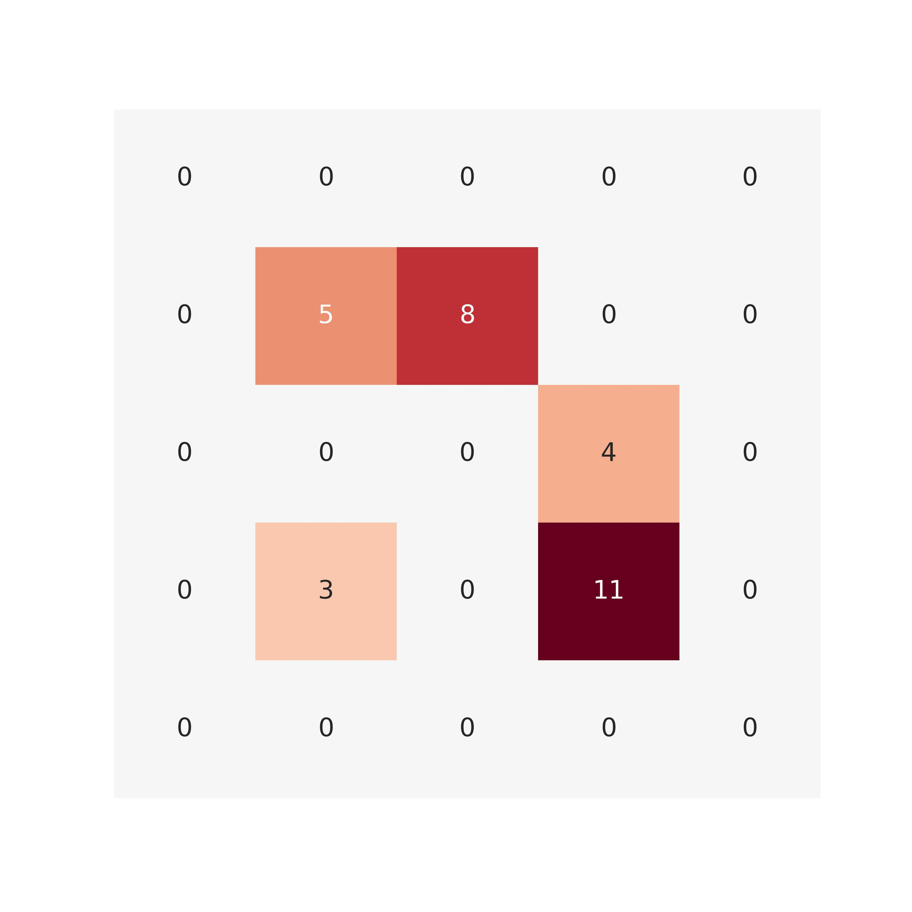

营养物质循环算法示意

运输距离计算基于从大到小,由近及远的计算原则,将供给值网格由大到小排列,计算每个供给值网格到所有需求值网格的距离,
由近及远将磷元素输送至农田. 如下图所示,
我们用一个5x5的区域举例说明(假设中间3x3的网格为城市行政边界范围内部),
下图为营养物质供给网格(居民点), 其数字代表其供给能力(总量31).
下图为营养物质需求格网(即农田),数值代表该格网需要多少营养元素供给(总量32),
可见中心点(城市内部),
以及城市外部(第一行,第一列,第五行,第五列)均有农田分布,
因此,营养元素在向城市外部运输的同时也需要向城市内部输送.
第一步: 利用供给网格的数值减去需求网格,
确认每个网格内部是供大于求还是求大于供(正数为供大于求,
这个网格向外运输营养物质; 负数为求大于供, 该网格接受外部传来的营养物质)
第二步:
从数值最大的网格开始,由大到小依次传输营养物质(本次示例中为第四行第四列(4,
4), 供给为11), (4, 4)首先向距离最近的(5, 4)网格运输营养,运输后(4,4)变成7,
(5, 4)变成0
随后, (4, 4)继续向最近的(3, 3), (3, 5), (5, 5)分别运输营养, 运输完成后,
(4, 4)数值归零, (4, 4)完成运输, 其最大运输距离即(4, 4)与(3, 3), (3, 5),
(5, 5)任意一点的距离(1.414). 接下来, 网格中数值最大的为(2, 3), 则开始从(2,
3)进行营养物质运输
首先填补最近的两个需求格网, 接下来最近的两个分别是(1, 2)与(1, 4), 而(3,
3)仅剩下2点供给能力, 此时, 由左上至右下的顺序分配这两点给所有网格, 不影响该点营养物质运输距离
对剩下的格点反复进行前述过程
继续分配(3, 4), 此时将(3, 4)运输至(3, 1)的运输距离为全局最大值3,
因此在这个示例中, 营养物质运送距离最大达到3个网格单元
继续分配
继续分配
继续分配
至此,仅剩一个供给点没有分配完(2, 2), 下一步,将该点营养物质运送至(1,
1)则所有供给点分配完毕, 所有营养运送完成
运送完毕, 最远运送距离为(4,3)向(3, 1)运输时的3个网格单元